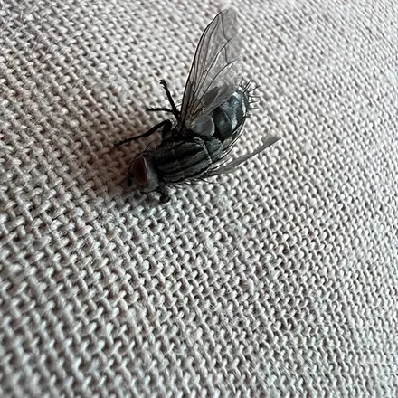
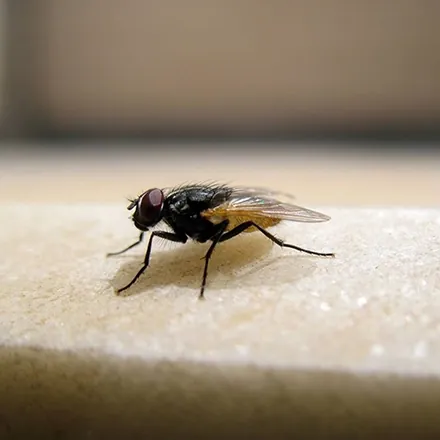

مگس شاید بیآزارترین آفت خانه به نظر برسد، اما همین حشرهٔ کوچک پیش از نشستن روی سفرهٔ شما، روی زباله و فضولات نشسته است و همان آلودگیها را با پاها و بزاق خود به غذا منتقل میکند. برای منازل و بهخصوص رستورانها، قنادیها و دامداریهای کرج، کنترل مگس یک الزام بهداشتی است نه یک سلیقه. در این راهنما انواع مگسهای رایج، بیماریهایی که منتقل میکنند، روشهای خانگی و روند سمپاشی تخصصی مگس در کرج را بررسی میکنیم.
شناخت مگس و انواع رایج آن در ایران
مگسها به راستهٔ دوبالان (Diptera) تعلق دارند؛ یک جفت بال پروازی دارند و جفت دوم به اندام تعادلی تبدیل شده است. چرخهٔ زندگی مگس کامل است: تخم، لارو، شفیره و حشرهٔ بالغ؛ و در هوای گرم این چرخه میتواند در حدود یک تا دو هفته کامل شود. یعنی یک منبع زبالهٔ فراموششده، در چند هفته به هزاران مگس تبدیل میشود. آنچه در خانه و محل کار میبینید معمولاً یکی از این چند گونه است:
| گونه | ظاهر | محل تجمع | منبع تخمگذاری |
|---|---|---|---|
| مگس خانگی | خاکستری با نوارهای تیره روی سینه | آشپزخانه، سطل زباله، حیاط | زباله، فضولات، مواد آلی در حال فساد |
| مگس سرکه (میوه) | بسیار ریز، بدن روشن و چشم قرمز | دور میوههای رسیده و آبمیوه | میوه و مواد تخمیرشده |
| مگس فاضلاب | ریز، خاکستری و کرکدار شبیه پروانه | حمام، سرویس بهداشتی، اطراف سینک | لجن داخل سیفون و لولهها |
| مگس گوشت | درشت با ظاهر شطرنجی خاکستری | اطراف گوشت و لاشه | گوشت فاسد، لاشه جوندگان |
نشانههای آلودگی به مگس
- افزایش ناگهانی تعداد مگس در یک فضای مشخص از خانه یا مغازه.
- لکههای ریز تیره (فضولات مگس) روی شیشهها، لامپها و سطوح روشن.
- دیدن لارو (کرمینههای سفید) در سطل زباله، کف انباری یا اطراف مواد فاسد.
- تجمع مگسهای ریز دور ظرف میوه یا کفشور که نشانهٔ کانون تخمگذاری در همان نقطه است.
- بوی فساد از یک نقطهٔ مشخص (احتمال وجود لاشهٔ جونده در دیوار یا کانال) همراه با هجوم مگس درشت.
خطرات و بیماریهای منتقله از مگس
مگس نیش نمیزند، اما ناقل مکانیکی دهها عامل بیماریزاست. پاها و بدن پرزدار مگس هنگام نشستن روی زباله و فضولات به میکروب آغشته میشود و چون مگس برای تغذیه روی غذا بزاق برمیگرداند، آلودگی را مستقیم وارد خوراک شما میکند. مهمترین بیماریهایی که از این راه منتقل میشوند:
- حصبه و شبهحصبه
- وبا و انواع اسهالهای عفونی
- اسهال خونی (شیگلوز)
- عفونتهای چشمی مانند تراخم
- آلودگی مواد غذایی به تخم انگلها
برای واحدهای صنفی، حضور مگس علاوه بر خطر بهداشتی، در بازرسیهای بهداشت محیط نمره منفی جدی محسوب میشود و میتواند به اخطار یا جریمه منجر شود.
راههای پیشگیری از هجوم مگس
- زباله را روزانه و در کیسههای گرهزده خارج کنید و سطلها را مرتب بشویید.
- روی در و پنجرهها توری سالم نصب کنید.
- مواد غذایی و میوهها را بدون پوشش رها نکنید.
- سیفونها و کفشورها را هفتگی با آب داغ و مواد شوینده تمیز کنید تا مگس فاضلاب جایی برای تخمگذاری نداشته باشد.
- فضولات حیوانات را سریع جمعآوری کنید.
- در مغازهها از پردهٔ هوا یا توری روی ورودی و از تلههای چسبی و نوری استاندارد استفاده کنید.
روشهای خانگی و محدودیتهای آنها
تلههای چسبی آویز، تلههای نوری، حشرهکشهای خانگی و گیاهان دورکننده مانند نعناع و اسطوخودوس، همگی میتوانند تعداد مگسهای بالغ را کم کنند و برای مزاحمتهای فصلی کافیاند.
محدودیت مهم اینجاست: همهٔ این ابزارها فقط حشرهٔ بالغ را هدف میگیرند. تا وقتی کانون تخمگذاری — زبالهٔ مانده، لجن فاضلاب، فضولات دام یا لاشهٔ یک جونده — سر جای خودش باشد، هر روز نسل تازهای جایگزین میشود. دفع ریشهای مگس یعنی پیدا کردن و حذف منبع، و بعد از بین بردن جمعیت باقیمانده با سم ابقایی؛ کاری که در آلودگیهای گسترده فقط از تیم تخصصی برمیآید. اگر منبع بو و مگس، لاشهٔ موش در دیوار یا سقف کاذب است، مطلب دفع موش و جوندگان در کرج را هم بخوانید.
روند سمپاشی تخصصی مگس در آرام محیط البرز
آرام محیط البرز با مجوز رسمی وزارت بهداشت، درمان و آموزش پزشکی و مدیریت مهندس فاطمه براتی، کارشناس بهداشت محیط، کنترل مگس را در منازل، رستورانها، صنایع غذایی و دامداریهای کرج به این شکل انجام میدهد:
۱. مشاوره و بازدید رایگان
کارشناس منبع اصلی تولید مگس را شناسایی میکند؛ بدون حذف منبع، سمپاشی فقط اثر موقت دارد. سپس برنامه کار و هزینه بهصورت شفاف اعلام میشود.
۲. اجرای سمپاشی با سم مجاز
سطوح نشستن مگس (دیوارها، سقف، اطراف پنجرهها و ورودیها) با سموم ابقایی دارای مجوز وزارت بهداشت تیمار میشود و در صورت نیاز، محلهای تخمگذاری با لاروکش جداگانه کنترل میشوند. در محیطهای غذایی، سم و محل اجرا طوری انتخاب میشود که با مواد غذایی تماس نداشته باشد.
۳. ضمانت کتبی و پیگیری
پس از اجرا، ضمانتنامه کتبی دریافت میکنید و توصیههای بهداشتی برای جلوگیری از شکلگیری دوباره کانونها آموزش داده میشود.
عوامل مؤثر بر هزینه سمپاشی مگس در کرج
- مساحت و نوع کاربری محیط (منزل، رستوران، دامداری، انبار).
- شدت آلودگی و تعداد کانونهای تخمگذاری.
- نیاز به لاروکشی جداگانه در فاضلاب و محل نگهداری دام.
- قرارداد یکنوبتی یا سرویس دورهای برای اصناف.
جمعبندی و راه ارتباط
مبارزه با مگس دو رکن دارد: حذف منبع تخمگذاری و از بین بردن جمعیت بالغ با سم مناسب. اگر هجوم مگس در خانه، رستوران یا دامداری شما در کرج ادامهدار شده، برای بازدید و مشاوره رایگان با کارشناسان آرام محیط البرز تماس بگیرید: 09193613357 و 026-34209019. برای مزاحم شبانهٔ همخانوادهٔ مگس، راهنمای سمپاشی پشه در کرج و برای آفت اصلی آشپزخانهها، راهنمای سمپاشی سوسک در کرج را بخوانید.
سوالات متداول سمپاشی مگس
چرا خانه یا مغازه پر از مگس شده است؟
ازدیاد ناگهانی مگس تقریباً همیشه یعنی یک منبع تخمگذاری در نزدیکی وجود دارد: زباله یا پسماند مواد غذایی، مواد در حال فساد، فضولات حیوانی، لاشه جونده در دیوار یا کانال، یا فاضلاب باز. تا این منبع پیدا و حذف نشود، هیچ اسپری یا تلهای مشکل را ریشهای حل نمیکند.
مگسهای ریز آشپزخانه چه هستند و چطور از بین میروند؟
مگسهای بسیار ریز دور میوهها معمولاً مگس سرکه هستند و مگسهای خاکستری کرکدار اطراف سینک و حمام، مگس فاضلاب. هر دو در مواد آلی مرطوب تخم میگذارند؛ راهحل اصلی حذف میوههای رسیده، تمیز کردن سیفون و لولهها و خشک نگه داشتن محیط است و سمپاشی زمانی لازم میشود که کانون در فاضلاب یا کانالها شکل گرفته باشد.
سمپاشی مگس چقدر طول میکشد و چه زمانی اثر میکند؟
اجرای سمپاشی برای یک واحد مسکونی یا مغازه معمولاً کمتر از یک ساعت زمان میبرد. سموم ابقایی که روی سطوح نشستن مگس اعمال میشوند طی چند روز جمعیت را بهشدت کاهش میدهند و اثر آنها تا مدتی باقی میماند. زمان دقیق را کارشناس در بازدید رایگان اعلام میکند.
آیا سم مگس برای کودکان و حیوانات خانگی خطر دارد؟
در آرام محیط البرز فقط از سموم دارای مجوز وزارت بهداشت استفاده میشود و در محیطهای حساس مانند رستوران و منزل، محل و نوع سم طوری انتخاب میشود که با مواد غذایی و محل بازی کودکان تماس نداشته باشد. رعایت چند ساعت فاصله از فضای سمپاشیشده و توصیههای کارشناس کافی است.
هزینه سمپاشی مگس در کرج چقدر است؟
هزینه به مساحت محیط، نوع کاربری (منزل، رستوران، دامداری)، شدت آلودگی و نیاز به نوبت تکرار بستگی دارد. بازدید و مشاوره کارشناسان آرام محیط البرز رایگان است و قیمت پیش از شروع کار بهصورت شفاف اعلام میشود. برای استعلام با شماره 09193613357 تماس بگیرید.